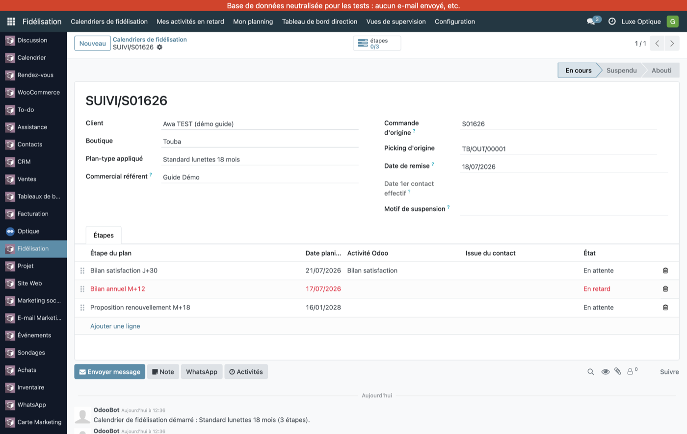
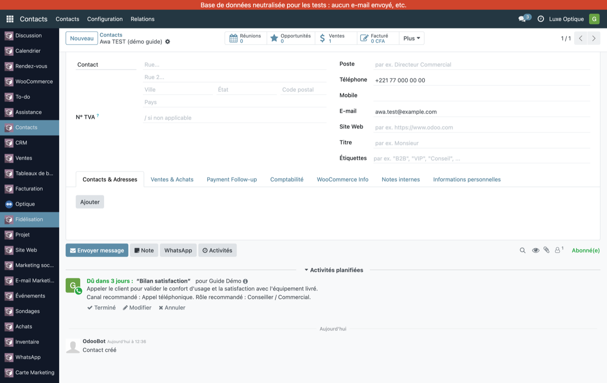
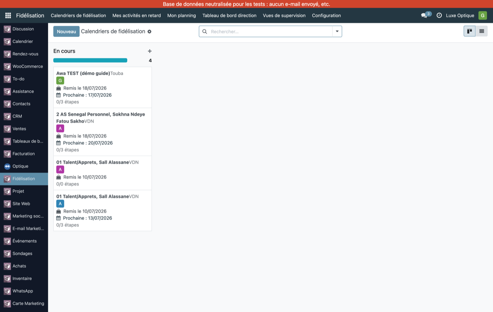
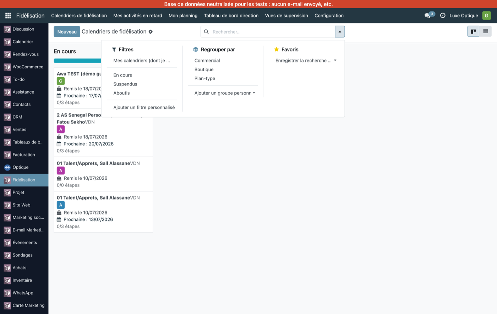
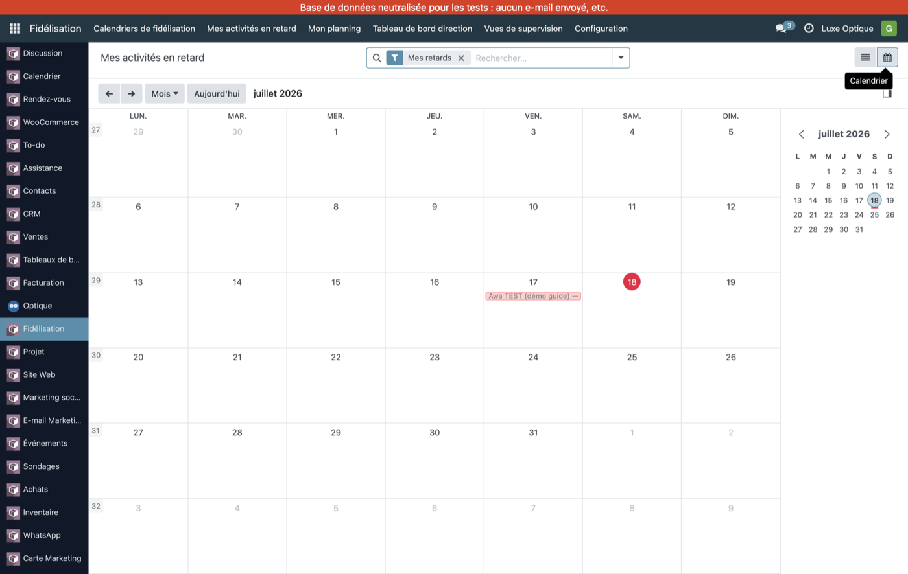
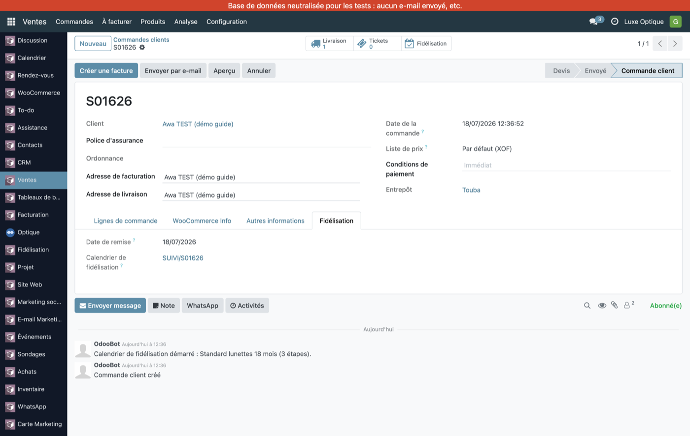

Guide utilisateur · Optique Luxe
Ne plus jamais « perdre » un client après une vente : dès qu'un équipement est remis, Odoo construit un calendrier de relances et rappelle au bon moment de recontacter le client.
Le module transforme une vente livrée en un plan de relances daté, puis pose au bon moment un rappel au commercial référent.
Tant que le client n'a pas racheté, désabonné ou terminé son parcours, le calendrier vit et déclenche ses relances.
Le suivi ne démarre PAS à la facturation. Il démarre à la validation de la livraison — le moment où l'on remet l'équipement au client.
Certaines boutiques enchaînent plusieurs opérations internes avant l'expédition finale :
| Boutique | Étapes de livraison |
|---|---|
| VDN | 3 étapes : Préparation → Colisage → Expédition |
| Corniche | 2 étapes : Préparation → Expédition |
| Touba, Centre Ville | 1 étape : Expédition directe |
Le suivi démarre uniquement à la validation de la dernière étape — l'expédition (sortante). Les transferts internes ne déclenchent rien. Autrement dit : le suivi démarre quand le client repart avec ses lunettes.
Odoo ne crée pas de calendrier si l'une de ces conditions manque :
| Condition | Sans quoi… |
|---|---|
| Le client a donné son consentement de fidélisation | Aucun suivi (RGPD) |
| Le client n'est pas désabonné (opt-out) | Aucun suivi |
| Client majeur, ou mineur avec accord du représentant légal | Aucun suivi |
Si un client « ne déclenche jamais de suivi », vérifiez d'abord sa case consentement sur sa fiche.
Dès la validation de l'expédition, Odoo crée un calendrier (état En cours) rattaché au client, à la boutique et à la commande, avec une étape par relance prévue. Un message est aussi posté dans la conversation de la commande.

Chaque étape suit un cycle : En attente → (le jour venu, traitée) → Réalisée. Une étape non traitée à temps passe En retard. Le calendrier lui-même évolue de En cours à Suspendu puis Abouti.
Le plan-type appliqué dépend des produits de la commande. Délais comptés à partir de la date de remise.
| Étape | Échéance | Canal | Objectif |
|---|---|---|---|
| 1 | + 30 jours | Appel | Bilan de satisfaction |
| 2 | + 12 mois | Bilan annuel (entretien, contrôle de vue) | |
| 3 | + 18 mois | Appel | Proposition de renouvellement |
| Étape | Échéance | Canal | Objectif |
|---|---|---|---|
| 1 | + 15 jours | Contrôle du confort d'adaptation | |
| 2 | + 60 jours | Rappel de réassort |
| Étape | Échéance | Canal |
|---|---|---|
| Attention anniversaire | prochain anniversaire | Appel |
| Bilan personnalisé | + 12 mois |
Les plans et leurs délais sont paramétrables par un responsable (Configuration → Plans-types), sans intervention technique.
3 jours avant l'échéance d'une étape, Odoo crée automatiquement un rappel sur la fiche du client, assigné au commercial référent — avec quoi faire, par quel canal, et une note d'aide.

Une fois le client contacté, le commercial clôture l'étape en choisissant une issue :
| Issue | Signification |
|---|---|
| Répondu | Le client a été joint et a répondu |
| Injoignable | Impossible de joindre le client |
| Refusé poliment | Pas intéressé cette fois |
| A acheté | La relance a débouché sur un achat |
L'étape passe alors en Réalisée et le rappel disparaît de la fiche client.
Si une étape n'est pas traitée à sa date, elle passe automatiquement En retard. Chaque matin, chaque commercial reçoit un e-mail récapitulatif listant ses étapes en retard — pour ne rien laisser filer.
Menu Fidélisation → Calendriers de fidélisation. La vue affiche les calendriers de votre/vos boutique(s), regroupés par état.

Dans la recherche, le filtre « Mes calendriers (dont je suis référent) » n'affiche que les clients dont vous êtes le commercial référent.

Les menus Mes activités en retard et Mon planning proposent une vue calendrier de vos étapes, positionnées à leur date.

Chaque événement est nommé de façon lisible : « Client — Objectif (Canal) », pour savoir immédiatement qui contacter et pourquoi.
Sur chaque commande, un onglet Fidélisation rappelle la date de remise et donne un lien direct vers le calendrier créé. Un bouton intelligent « Fidélisation » (en haut) ouvre aussi directement ce calendrier.

Le module gère automatiquement plusieurs situations, sans action manuelle :
| Situation | Ce qui se passe |
|---|---|
| SAV en cours | Le calendrier est suspendu le temps du SAV, puis repris à la clôture du ticket. |
| Réachat anticipé | L'ancien calendrier est clôturé et un nouveau démarre. |
| Désabonnement | Tous les calendriers du client sont annulés et les rappels supprimés. |
| Passage à la majorité | E-mail de renouvellement de consentement à 18 ans ; sans réponse sous 90 j, le suivi est mis en pause. |
| Départ d'un commercial | Clients et rappels sont réattribués à un autre référent. |
| Sous-menu | Pour qui | Contenu |
|---|---|---|
| Calendriers de fidélisation | Tous | Tous les calendriers de la boutique |
| Mes activités en retard | Tous | Vos étapes en retard (liste + calendrier) |
| Mon planning | Tous | Vos étapes à venir |
| Tableau de bord direction | Responsables | 4 indicateurs de pilotage |
| Vues de supervision | Responsables | SAV > 30 j, clients sans référent, absences |
| Configuration | Responsables | Plans-types, fenêtres de vigilance |